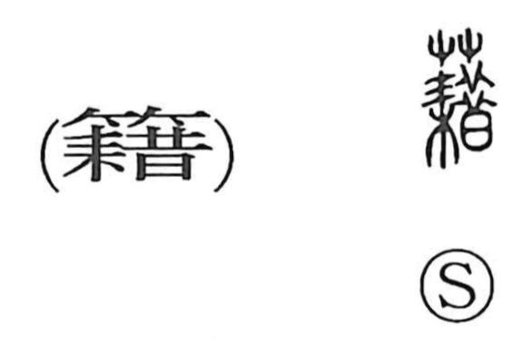

籍

Kun: | On: seki
register ・ record book ・ family register ・ nationality ・ book ・ document ・ to record ・ to borrow
Explanation
A phono-semantic character, 籍 takes its sound from 藉 (seki). The older graphic core is the plow element with feet pressing on it, expressing the act of treading and turning the earth to break it finely; this part incorporates 昔, which originally depicted thinly sliced dried meat heaped up, evoking the idea of cutting into small pieces. With the bamboo classifier 竹 added, the character points to thinly split bamboo slats used as 竹簡—writing slips—and, by extension, wooden slips (木簡). Bound together, these made books before paper, so 籍 came to mean writings, documents, and books, and by further development the act of recording. The graph is also used interchangeably with 藉 in the sense ‘to borrow.’